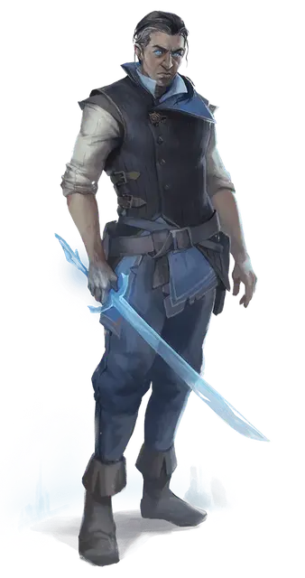

Сефек Калтро
Sephek Kaltro
Средняя Нежить, нейтрально-злая, именной НИП

Класс Доспеха 12
Хиты 75 (10к8 + 30)
Скорость 30 футов
| мод | спас | ||
|---|---|---|---|
| СИЛ | 16 | +3 | +3 |
| ЛОВ | 14 | +2 | +2 |
| ТЕЛ | 16 | +3 | +3 |
| мод | спас | ||
|---|---|---|---|
| ИНТ | 11 | +0 | +0 |
| МДР | 16 | +3 | +3 |
| ХАР | 18 | +4 | +4 |
Навыки Восприятие +5, Выживание +5
Иммунитет к урону холод
Иммунитет к состояниям испуг, очарование
Чувства пассивное Восприятие 15
Языки Общий
Опасность 3 (700 опыта)
Бонус мастерства +2
Особенности
Холодная регенерация. Если температура вокруг него 0 градусов по Фаренгейту или ниже, Сефек восстанавливает 5 хитов в начале своего хода. Если он получает урон огнём, эта особенность не действует в начале следующего хода Сефека. Сефек умирает только в том случае, когда начинает свой ход с 0 хитов и не регенерирует.
Врожденное колдовство. Сефек может накладывать туманный шаг [misty step] до трёх раз в день, без использование компонентов. Его базовой характеристикой является Харизма.
Действия
Мультиатака. Сефек совершает две атаки оружием.
Длинный ледяной меч. Рукопашная атака оружием: +5 к попаданию, досягаемость 5 фт., одна цель. Попадание: 7 (1к8 + 3) рубящего урона, или если Сефек использует оружие двумя руками 8 (1к10 + 3) рубящего урона плюс 5 (2к4) урона холодом.
Ледяной кинжал. Дальнобойная атака оружием: +5 к попаданию, досягаемость 5 фт. или дистанция 20/60 фт., одна цель. Попадание: 5 (1к4 + 3) колющего урона плюс 5 (2к4) урона холодом.
Описание
Сефек Калтро - хорошо сложенный мужчина лет тридцати с оливкового цветом лица. Его темные волосы собраны в хвост, и ни на лице, ни на теле нет волос. Одевается Сефек в стильный жилет с брюками и ботинками, похожими на те, что носят моряки с южного Побережья Мечей, и не носит ни доспехов ни одежду для холодной погоды и, похоже, не вооружен. Его самая поразительная черта - голубые, как замерзшее озеро, глаза.